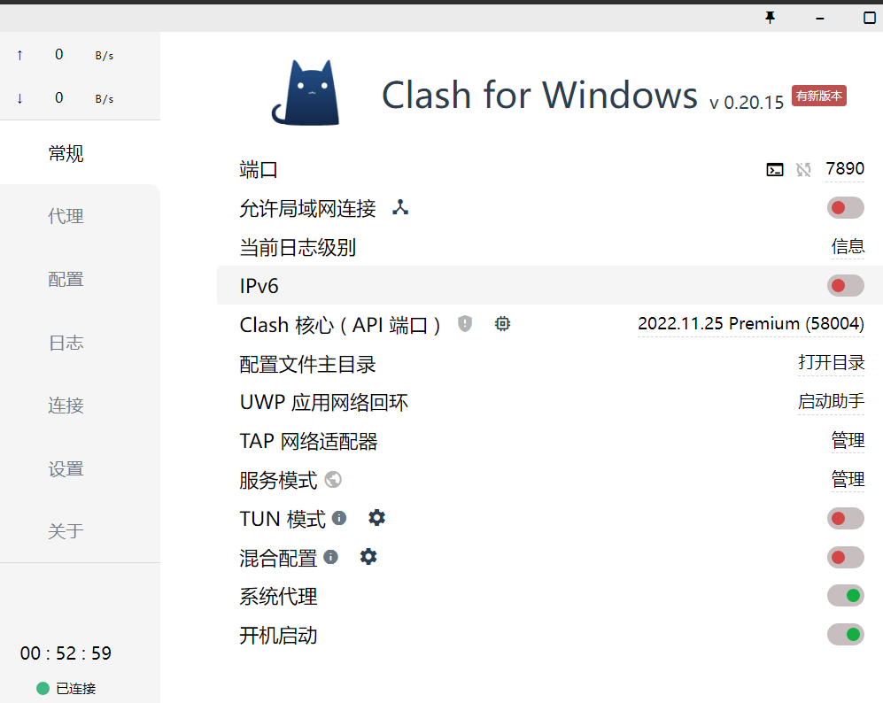
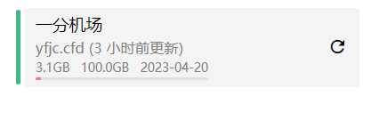
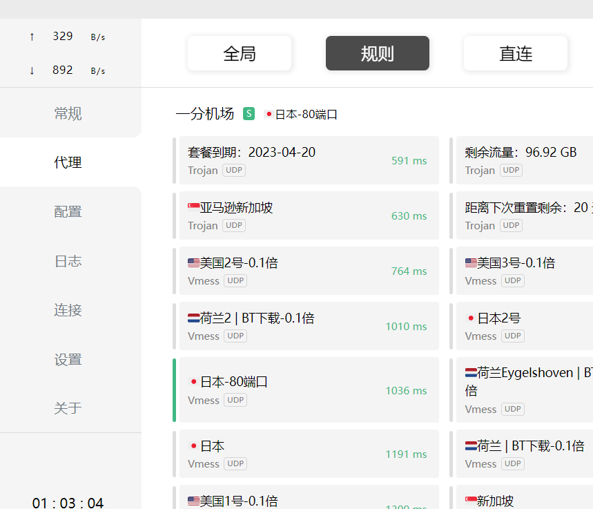

如何使用Clash for Windows实现科学上网？
作者：萝卜丁
发布时间：2023年3月31日
如果你想在互联网上畅游自如，避免受到地域限制或者网络封锁的影响，那么科学上网就是必备技能之一。 在本文中，我们将介绍 Clash 这一强大的科学上网工具，以及如何使用它来突破网络封锁，访问被屏蔽的网站。
首先，你肯定需要先安装Clash软件，
这里提供了windows客户端和安卓客户端的下载链接： windows客户端 安卓客户端下载后进行我们的第二步：
安装成功后，首先点击常规，将开机自启和系统代理打开，

之后点击配置，粘贴机场的订阅节点，下载导入。
关于机场，可以参考我的另一个博客，地址：机场推荐
推荐使用一分机场的日本80节点，便宜好用
导入成功后选择对应的配置文件，

再点击代理，可以选择规则模式或者全局模式

这样就实现科学上网了，推荐使用Google哦！